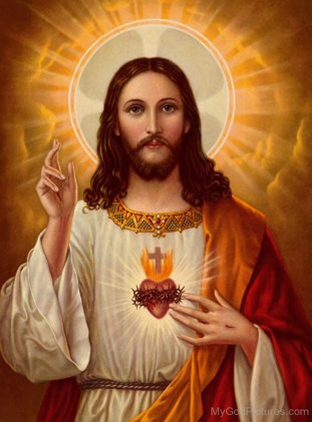
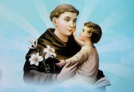
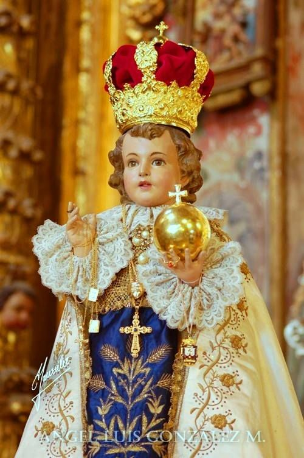
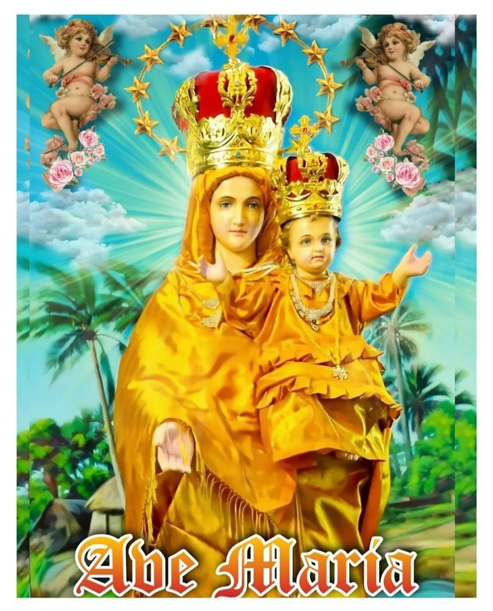
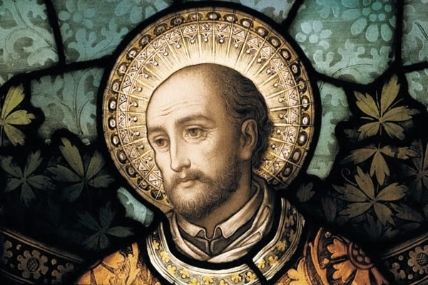
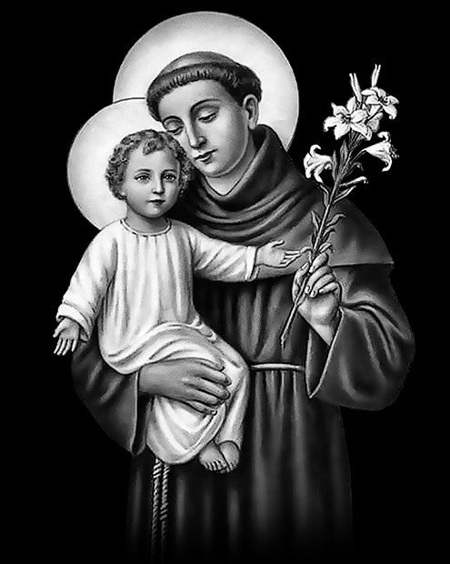

-

IRUTHAYA ANDAVAR CHURCH
sholavanthan
என் இறைவனாகிய தந்தையே! நீர் நன்மை நிறைந்தவர்,
என் பாவங்களால் உமது அன்பை மறந்ததற்காக மனம் வருந்துகிறேன் ஆமென்..
CHURCH WAS BUILT: , Fr. Benedict Ambrose in 1983.
CHURCH RENOVATION:
NO.OF.CATHOLIC FAMILIES:
1. பாடகர் குழு ஒருங்கிணைப்பாளர்:
திருமிகு. எலிசபெத்
2. மரியாயின் சேனை ஒருங்கிணைப்பாளர்: திருமிகு. சாரதி
3. வின்சென்ட் தே பவுல் சபை ஒருங்கிணைப்பாளர்கள்: திருமிகு. ஜான் பீட்டர்.
திருமிகு. பாபு
4. இளைஞர் இயக்கம் ஒருங்கிணைப்பாளர்கள்: செல்வன். ஜோயல்
செல்வன். ரெமி
-

ST.ANTONY'S CHURCH
oormetchikulam
பாவிகளுக்கு வெளிச்சம் கொடுக்கிறவரான புனித அந்தோணியாரே ....
எங்களுக்காக வேண்டிக்கொள்ளும் .
CHURCH WAS BUILT BY :
Fr. N.P. Alphonse
CHURCH RENOVATED BY :
Fr. Edward Francis
NO.OF.CATHOLIC FAMILIES:
-

INFANT JESUS CHURCH
m.g.r nagar
இரக்கமே உருவான குழந்தை இயேசுவே!
உம் இனிய இதயம் கனிவோடு எங்கள் செபத்தை ஏற்று வரத்தை அளித்தருளும்படி பணிவாக உம்மை இறைஞ்சி வேண்டுகிறோம்.
CHURCH WAS BUILT BY:
Fr. Edward Francis in 2019.
NO.OF.CATHOLIC FAMILIES:
-

AROCKIYA MADHA CHURCH
keelamathur
சர்வலோகம் படைக்குமுன்னே சர்வேசுரனால் தெரிந்து கொள்ளப்பட்ட பரிசுத்த ஆரோக்கிய மாதாவே, எங்களுக்காக வேண்டிக்கொள்ளும்.
CHURCH WAS BUILT BY :
NO.OF.CATHOLIC FAMILIES:
-

ST.IGNATIOUS CHURCH
thodaneri
தப்புள்ள கிரிகைகளையும், சிந்தனைகளையும் கண்டிப்பாய் நீக்கி விலக்கின புனித இஞ்ஞாசியாரே, எங்களுக்காக வேண்டிக்கொள்ளும்.
CHURCH WAS BUILT BY:
CHURCH RENOVATION: Fr. Edward Francis in 2020.
NO.OF.CATHOLIC FAMILIES:
13
-

ST.ANTONY'S CHURCH
mannadi mangalam
தர்மநெறியில் மாறாத மனதை விரும்பினவரான புனித அந்தோனியாரே,
எங்களுக்காக வேண்டிக்கொள்ளும்
CHURCH WAS BUILT BY: Fr. Lourdhu Ubakaram on 03.12.1976.
NO.OF.CATHOLIC FAMILIES: 13
*/*/*/*/*/**/*/*/*/*/*/
Religious in the Parish
Holy Cross of Chavanod
came to Paravai,
year:
Kinds of Ministry carried out :
Name of the Superior
SMII
came to Samayanallur,
year:
Kinds of Ministry carried out :
Name of the Superior
St. Anne’s of Bangalore
came to Sholavanthan,
year:
Kinds of Ministry carried out :
Name of the Superior
HOME|| CATHOLIC INSTITUTION